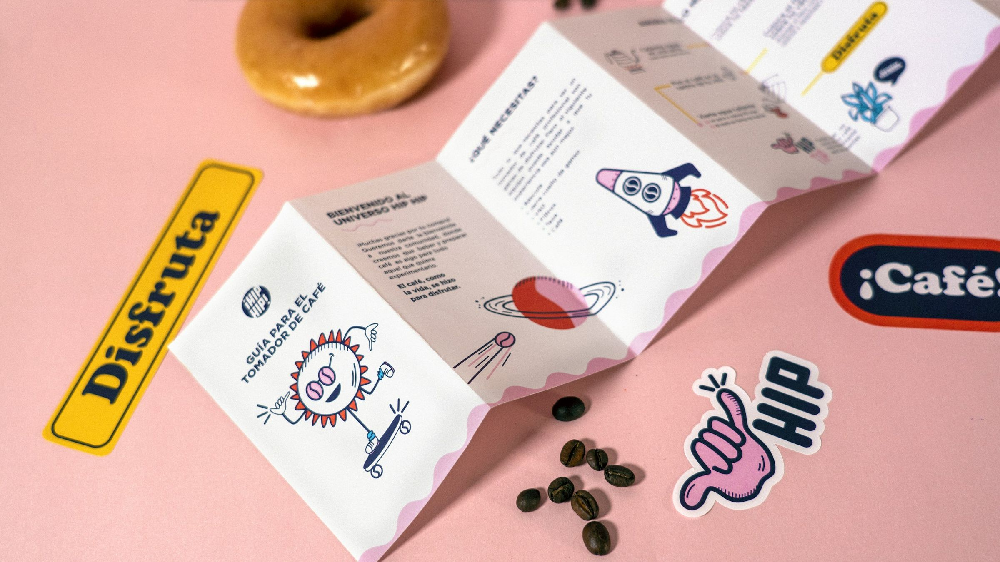
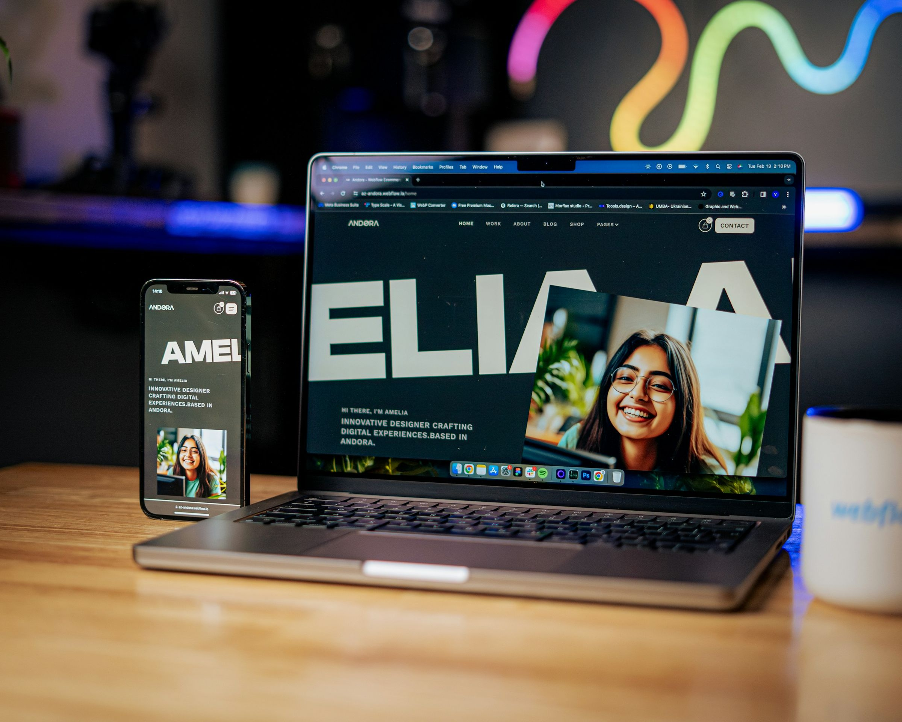
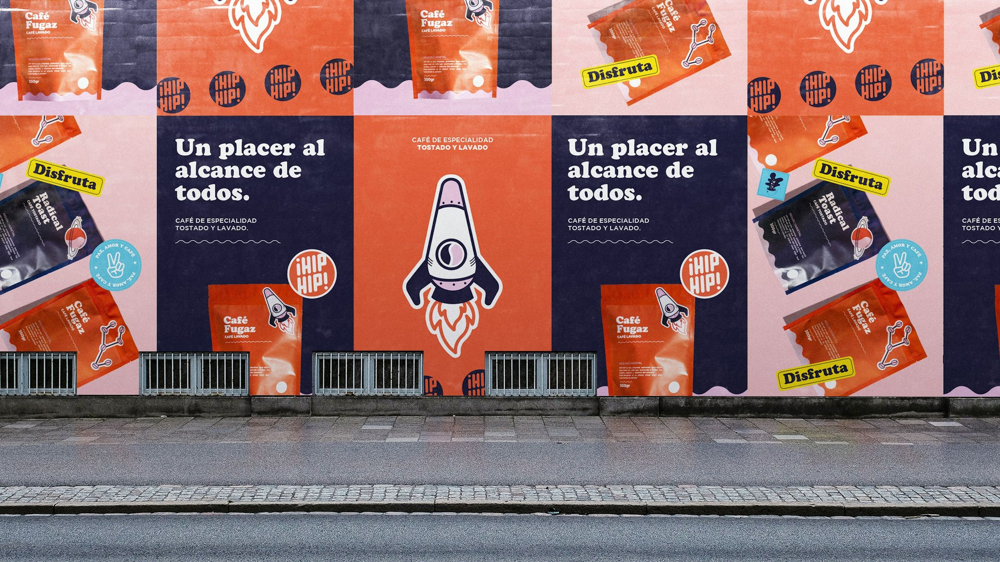

המיתוג, האתר והקמפיין שלכם, במשרד אחד.
ויזואל · קרוב לעשרים שנה, לרשויות ולעסקים מכל הארץ
עבודות נבחרות
שלוש מחלקות, צוות אחד.
״אם אתם מוכרים זהב, ודאו שאתם לא עוטפים אותו בנייר עיתון.״



ויזואל · קרוב לעשרים שנה, לרשויות ולעסקים מכל הארץ
״אם אתם מוכרים זהב, ודאו שאתם לא עוטפים אותו בנייר עיתון.״